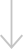

<aside class="sidebar " >
  <a href="#!" class="menu ">
    <span class="icon"></span>
    <span class="icon"></span>
    <span class="icon"></span>
    <span class="icon"></span>
</a>
  
  <ul class="ul-aside">
    <li><a class="aside-link" href="">История компании</a></li>
    <li><a class="aside-link" href="">Каталог вертолетов</a></li>
    <li><a class="aside-link" href="">Каталог запчастей</a></li>
    <li><a class="aside-link" href="">Конфигуратор</a></li>
    <li><a class="aside-link" href="">Новости</a></li>
    <li><a class="aside-link" href="">Обслуживание</a></li>
    <li><a class="aside-link" href="">Техническая информация</a></li>
    <li><a class="aside-link" href="">Услуги</a></li>
  </ul>
  <div class="list ">
    <p class="aside-pp">Листайте дальше</p>
    
    
  </div>
   <div class="radius"></div>
   <ul class="aside-footer">
    
     <li><a class="footer-link" href="">+7 (495) 723-44-44</a></li>
     <li><a class="footer-link" href="">+7 (963) 777-57-57</a></li>
     <li><a class="footer-link" href="">info@aerounion.msk.ru</a></li>
     <li><a class="footer-link" href="">Координаты: N56.12695 E037.0695</a></li>
     <li><a class="footer-link" href="">Частота радиосвязи: 123.9 Мгц - UUCH</a></li>
   </ul>
</aside>